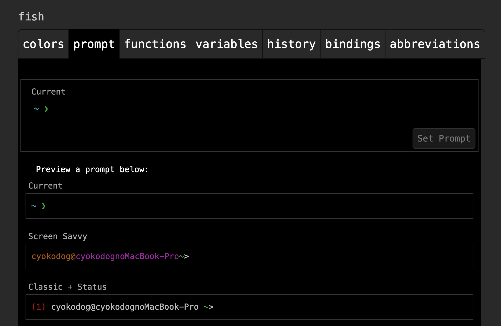
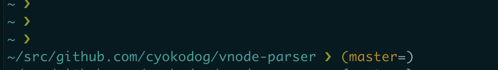
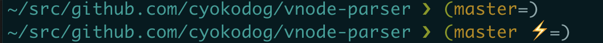
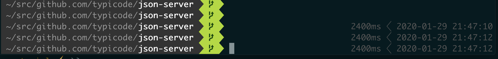
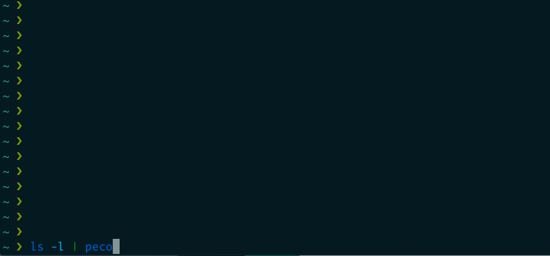
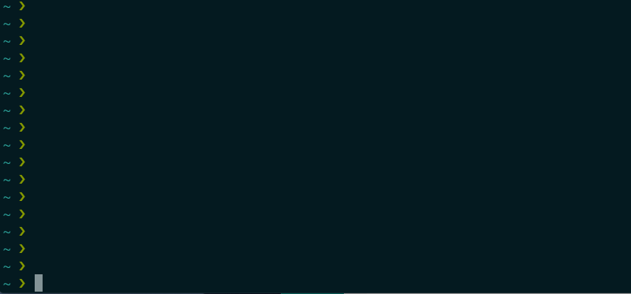

「bash やめて fish とかでターミナル環境いい感じにしたいけど、ググるとあれ入れるためにはこれ入れろとか言っててなんか面倒そうだなぁ...」とか感じた方にとっては有用な記事かもしれません。記事の手順どおり進めればとりあえずいい感じのターミナル環境が整うかと思います。
動機
- 数年前から shell に fish を使用している
- とりあえずデフォルト設定のままでもだいぶ便利になるので、git 関連のプロンプト設定ぐらいしかしていなかった
- あと shell の構文の違いから anyenv(ndenv) を動かすための工夫が必要だった（が、ndenv が非推奨になったので今は nodenv を使っており解決済）
- ghq とか peco を使うと便利と聞いてたので気になっていた
- https://app.codegrid.net/entry/2017-tool-survey-1#toc-3 (ゆっきーのおすすめ)
- ググると Go 言語を入れなきゃダメとか古いやり方が結構ひっかかりめんどくさい印象がある(が今は homebrew でもいけるので簡単)
- プラグイン前提の説明が多いので、一度にまとめてやろうとするとどこまでが標準機能で、どこからが拡張機能なのか分かりづらい
- 不便はしてないけどふわっとした理解だったので、ちょっと整理しながら環境を整えてみよう...！
概要
- fish
- git 向けプロンプト設定
- fisher(プラグインマネージャ)
- テーマ設定
- ghq
- peco
- peco プラグイン
- ghq + peco 連携プラグイン
fish
$ brew install fish
$ fish -v
fish, version 3.0.2
- とりあえずこれだけでもいろいろ補完が効くようになり便利
- fish は、Friendly interactive shell の略
- 評判の良くない POSIX（シェルの標準仕様）とは非互換の仕様らしい
git 向けプロンプト設定
以下コマンドでブラウザが開き、ブラウザ上で fish の設定が可能になる
fish_config

prompt タブでSet Promptを押すと、.config/fish/functions/fish_prompt.fishが生成される（後述のプラグイン追加とかをしていくと.config/fish/以下がいろいろと書き換わるので、これらの中身を見てるとなんとなく何してるか見えてくる）。
function fish_prompt --description 'Write out the prompt'
set -l color_cwd
set -l suffix
switch "$USER"
case root toor
if set -q fish_color_cwd_root
set color_cwd $fish_color_cwd_root
else
set color_cwd $fish_color_cwd
end
set suffix '#'
case '*'
set color_cwd $fish_color_cwd
set suffix '>'
end
echo -n -s "$USER" @ (prompt_hostname) ' ' (set_color $color_cwd) (prompt_pwd) (set_color normal) "$suffix "
end
文字列を整形して、最後の echo 文でプロンプトとして表示している。
ブランチ名の表示
上記コードを例えば次のように git プロンプトを示す環境変数(__fish_git_prompt)を表示するよう変更する。
function fish_prompt
echo -n (set_color cyan)(prompt_pwd) (set_color green)'❯'
# Git
set last_status $status
printf '%s ' (__fish_git_prompt)
set_color normal
end
bash とは構文が異なることが分かる。上記のように標準出力の参照には$が不要で、変数の値セットにはsetを用いる。
// bash
answer=$( expr 1 + 2 )
echo $answer
// fish
set answer ( expr 1 + 2 )
echo $answer
echo ( expr 1 + 2 )
プロンプトにブランチ名が表示されるようになる。

ステージング状態の表示
.config/fish/config.fishに git プロンプト関連の環境変数（__fish_git_prompt_*）を以下のように追記（環境変数などはこのファイルに記述する）。
# Fish git prompt
set __fish_git_prompt_showdirtystate 'yes'
set __fish_git_prompt_showstashstate 'yes'
set __fish_git_prompt_showuntrackedfiles 'yes'
set __fish_git_prompt_showupstream 'yes'
set __fish_git_prompt_color_branch yellow
set __fish_git_prompt_color_upstream_ahead green
set __fish_git_prompt_color_upstream_behind red
# Status Chars
set __fish_git_prompt_char_dirtystate '⚡'
set __fish_git_prompt_char_stagedstate '→'
set __fish_git_prompt_char_untrackedfiles '☡'
set __fish_git_prompt_char_stashstate '↩'
set __fish_git_prompt_char_upstream_ahead '+'
set __fish_git_prompt_char_upstream_behind '-'
プロンプトにステージングの状態が表示されるようになる。

fisher(プラグインマネージャ)
上記のような設定をしなくてもテーマプラグインを入れていい感じにすることもできる。プラグインを入れるためのプラグインマネージャにも oh-my-fish、fisher（旧 fisher man）、fundle、fresco などといろいろあり、設定ファイルの書き換え方とかに違いがある。
最初は oh-my-fish を入れてた
# oh-my-fishのインストール
curl -L https://get.oh-my.fish | fish
# インストール済みプラグインを表示
omf list
けど fisher が主流っぽいので次のように切替えた。
# oh-my-fish/oh-my-fishのアンインストール
omf destroy
# fisherのインストール
curl https://git.io/fisher --create-dirs -sLo ~/.config/fish/functions/fisher.fish
# インストール済みプラグインを表示
fisher ls
テーマ設定
プラグインマネージャを入れたのでテーマをインストールする。theme-bobthefishっていうテーマがメジャーっぽいのでこれを入れる。
fisher add oh-my-fish/theme-bobthefish
.config/fish/以下がいろいろ書き換わり、次のような見た目になる。

日付フォーマットの調整
日付フォーマットがおかしな感じになってるので. ~/.config/fish/config.fishにtheme_date_formatの設定を追加。ディレクトリ名の表示を省略したくない場合はfish_prompt_pwd_dir_lengthも。
set -g theme_date_format "+%Y-%m-%d %H:%M:%S"
set -g fish_prompt_pwd_dir_length 0
フォント設定
さらにプロンプトの文字が化けるので、iTerm2 のUse built-in Powerline glyphs（profiles -> text）を有効にする必要がある。
VS Code の統合ターミナルも化けるので、こちらも直したい場合は以下のフォントを追加（editor.fontFamily に設定する）
https://github.com/tonsky/FiraCode
テーマ使うのやめる
なんかフォント追加うんぬんするくらいなら、テーマ使わなくてもいいかな...って言う場合は次のようにテーマを削除する。
fisher rm oh-my-fish/theme-bobthefish
テーマを削除するとfish_prompt.fishも消えてしまうので、もう一回作り直す。
公式の説明によると
rm コマンドを使用してパッケージを削除します。パッケージに依存関係がある場合、それらも削除されます。依存関係が他のパッケージによってまだ共有されている場合、それらはインストールされたままになります。 パイプラインを使え一括で現在インストールされているものをすべて削除できます。 fisher ls | fisher rm
とのこと（パッケージじゃない自前設定の場合は消えちゃうってことかと）
ghq
Git のリモートレポジトリから取得したソースファイル郡をローカルでいい感じに管理してくれる。
# インストール
brew install ghq
.gitconfigに ghq で管理するソースファイルのルートディレクトリを設定する。
git config --global ghq.root ~/src
git cloneの代わりにghq getを使う。
ghq get git@github.com:cyokodog/vnode-parser.git
ghq listで取得したリポジトリをリストできる（-pで物理ディレクトリを表示）。
$ ghq list
github.com/cyokodog/vnode-parser
github.com/cyokodog/vuex-adapter
github.com/typicode/json-server
$ ghq list -p
/Users/cyokodog/src/github.com/cyokodog/vnode-parser
/Users/cyokodog/src/github.com/cyokodog/vuex-adapter
/Users/cyokodog/src/github.com/typicode/json-server
ghq lookでディレクトリ移動ができる。
$ ghq look vnode-parser
$ ~/s/g/c/vnode-parser ❯❯❯ (master=)
peco
「標準入力から受けた行データをインクリメンタルサーチして、選択した行を標準出力に返す」 コマンド。
ls -l | peco

選んだディレクトリは標準出力されるてるけど、移動できてるわけではない。
この特性を利用し、選択したディレクトリに移動できるようにする。
cd ( ls -1d */ | peco )
これを fish のショートカットキーに割り当ててるみる。fish/functions/peco_cd.fishを以下のように作成する。
function peco_cd
set selected_dir (ls -1d */ | peco)
if [ $selected_dir ]
cd $selected_dir
commandline -f repaint
end
end
config.fishに以下を追記し、. ~/.config/fish/config.fishで再読み込み
function fish_user_key_bindings
bind \cc 'peco_cd' #追記
end
ctrl + cで実行できるようになる。

ちなみにターミナル標準機能で、ctrl + iを押すと似たようなことはできる。
peco プラグイン
- oh-my-fish/plugin-peco: Browse your fish history with peco.
- 入力したコマンド履歴を peco で検索できるようになる。
インストール
fisher add oh-my-fish/plugin-peco
~/.config/fish/config.fishに以下を追記する。
set fish_plugins theme peco
function fish_user_key_bindings
bind \cr 'peco_select_history (commandline -b)'
end
ctrl + rでコマンド履歴を表示、選択し再実行できる。
ghq + peco 連携プラグイン
- decors/fish-ghq: ghq completion and keybinding for fish shell
- ghq ラッパープラグインで補完とキーバインドを提供してくれ、インストール済みの peco や fzf といい感じに連携してくれる
インストール
fisher add oh-my-fish/plugin-peco
~/.config/fish/config.fishに以下を追記（デフォルトは fzf）
set GHQ_SELECTOR peco
ctrl + g で、ghq で管理されるリポジトリリストを peco で選択できるようになる。